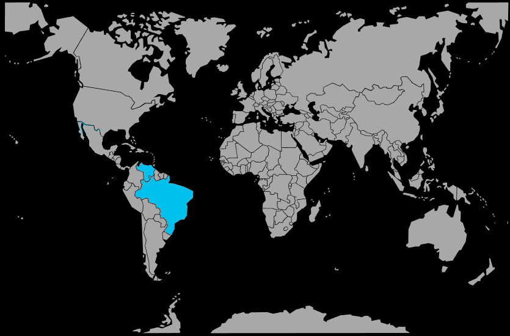

Systématique
- Ordre : Cichliformes
- Famille : Cichlidae
- Sous‑famille : Geophaginae
- Genre : Biotoecus
- Espèce : Biotoecus opercularis
Biotoecus opercularis est un cichlidé nain amazonien de très petite taille, atteignant à peine 4 à 5 cm, spécialisé dans les eaux acides et très douces.
Son corps allongé, de teinte beige à brun clair avec des motifs géométriques délicats, en fait une espèce discrète mais fascinante pour les aquariophiles spécialisés en biotopes amazoniens.
L'espèce est relativement paisible mais peut devenir territoriale en période de reproduction; elle vit en couple ou en petit groupe avec de multiples cachettes au sol.
Elle se maintient idéalement en aquarium spécifique ou avec de très petits poissons de surface n'entrant pas en compétition pour l'espace au fond du bac.
Mode : pondeur en cavité inversée; le couple pond sous une feuille immergée, une racine ou le toit d'une petite grotte, la femelle assurant la ventilation et la garde des œufs.
L'éclosion a lieu après 3 à 5 jours, et les alevins restent attachés au plafond du site de ponte ou sont déplacés dans une dépression; les soins parentaux se poursuivent pendant plusieurs semaines.
Dimorphisme sexuel : les mâles sont légèrement plus petits que les femelles, avec des nageoires plus colorées et plus développées; les femelles en reproduction prennent une coloration rosâtre sur l'abdomen.
Espérance de vie : environ 3 à 5 ans en captivité, sous réserve de paramètres d'eau stables et très doux.
Biotoecus opercularis habite les zones peu profondes, lentes et densément végétalisées de petits affluents, igarapés et rives de grands fleuves d'eau noire ou claire du bassin amazonien.
Répartition
Origine naturelle :
- Bassin amazonien au Brésil, dans les États d'Amazonas, Pará et Roraima.
- Rio Negro moyen et inférieur, rio Branco, rio Urubu, rio Trombetas, rio Madeira, rio Tapajós et rio Solimões.
- Lacs intérieurs et zones inondées, notamment lac Saracá et région de Parintins.
L'espèce est largement répartie dans le bassin amazonien central brésilien, dans une grande variété de milieux aquatiques peu profonds aux eaux acides et douces.
Paramètres de maintenance
Température : 24 à 30 °C, avec une température optimale autour de 28 °C pour la reproduction.
pH : 4,0 à 6,5, eau nettement acide.
GH : 0 à 5 °dGH, eau ultra douce.
Courant : très faible, avec une filtration douce et beaucoup de feuilles, racines et bois flotté.
Volume conseillé : à partir de 50 à 80 L pour un couple ou un petit groupe, dans un bac bien mature.
Régime alimentaire
Régime : micro‑carnivore géophage; il se nourrit de petits invertébrés, larves de chironomes, ostracodes et autres micro‑organismes du substrat.
En aquarium, il apprécie les nourritures vivantes et congelées de petite taille (micro‑vers, artémias, daphnies), avec une transition possible vers des granulés très fins.
Des repas fréquents mais modérés, associés à un bac mature riche en micro‑faune, favorisent la santé et la reproduction de cette espèce délicate.